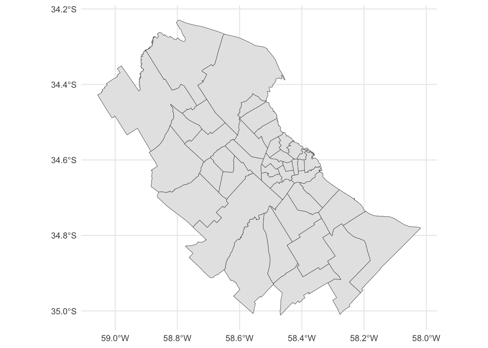

Input inicial - Mapas vectoriales de provincia de Buenos Aires y AMBA
Objetivo - Generar mapas de menor tamaño para que la aplicacion no tenga problemas de eficiencia. - Producir un mapa de Buenos Aires dónde no se diferencien las comunas de CABA. - Obtener los centroides de los departamentos de provincia de Buenos Aires
library(tidyverse)
── Attaching core tidyverse packages ──────────────────────── tidyverse 2.0.0 ──
✔ dplyr 1.1.2 ✔ readr 2.1.4
✔ forcats 1.0.0 ✔ stringr 1.5.0
✔ ggplot2 3.4.3 ✔ tibble 3.2.1
✔ lubridate 1.9.2 ✔ tidyr 1.3.0
✔ purrr 1.0.1
── Conflicts ────────────────────────────────────────── tidyverse_conflicts() ──
✖ dplyr::filter() masks stats::filter()
✖ dplyr::lag() masks stats::lag()
ℹ Use the conflicted package (<http://conflicted.r-lib.org/>) to force all conflicts to become errors
library(stringr)library(sf)
Linking to GEOS 3.11.0, GDAL 3.5.3, PROJ 9.1.0; sf_use_s2() is TRUE
# El amba consta de 40 municipios mas ciudad de buenos aires# fuente: https://www.argentina.gob.ar/dami/centro/amba# Vamos a hacer una seleccion de amba con menos partidos# Lista de los partidos que vamos a considerar AMBA incluyendo comunas CABAamba_reducido_names <-c('Almirante Brown','Avellaneda','Berazategui',paste('Comuna', 1:15), # CABA'Esteban Echeverría', 'Escobar', 'Ezeiza','Florencio Varela','General San Martín','Hurlingham','Ituzaingó','José C. Paz','La Matanza', 'Lanús', 'Lomas de Zamora','Malvinas Argentinas', 'Merlo', 'Moreno', 'Morón','Quilmes', 'Pilar', 'Presidente Perón','San Fernando', 'San Isidro', 'San Miguel','Tigre', 'Tres de Febrero','Vicente López')
Area Metropolitana de Buenos Aires (AMBA) y Ciudad Autonoma de Buenos Aires (CABA)
# Estos shapefiles fueron extraidos del Instituto Geografico Nacional (IGN)amba <-st_read("data/inicial/departamentos.shp") |>st_zm() |>filter(str_detect(NAM, paste(amba_reducido_names, collapse ="|")), SAG %in%c('ARBA - Gerencia de Servicios Catastrales','Direc. de Catastro'))
Reading layer `departamentos' from data source
`/Users/florenciadandrea/geocovid_bsas/data/inicial/departamentos.shp'
using driver `ESRI Shapefile'
Simple feature collection with 529 features and 10 fields
Geometry type: MULTIPOLYGON
Dimension: XY, XYZ
Bounding box: xmin: -74 ymin: -90 xmax: -25 ymax: -21.78113
z_range: zmin: 0 zmax: 0
Geodetic CRS: WGS 84
# Chequeo el resultado visualmenteamba_reducido <- amba |> dplyr::select('partido'= NAM , geometry) |> dplyr::filter(partido %in% amba_reducido_names)ggplot() +geom_sf(data = amba_reducido)+theme_minimal()
Remuevo poligonos duplicados
# Vemos que San Fernando esta compuesto por dos poligonos,# Uno es el delta, y deberiamos eliminarloggplot() +geom_sf(data =subset(amba_reducido, partido =='San Fernando'))+theme_minimal()
# Lo paso a poligono para eliminar el extraamba_reducido =st_cast(amba_reducido,"POLYGON")
Warning in st_cast.sf(amba_reducido, "POLYGON"): repeating attributes for all
sub-geometries for which they may not be constant
# Chequeo que se cual quiero eliminarggplot() +geom_sf(data = amba_reducido$geom[30])+theme_minimal()
# Elimino el poligono extraamba_reducido <- amba_reducido[-30,]# Archivo vectorial final de AMBAggplot() +geom_sf(data = amba_reducido)+theme_minimal()

Este es el archivo con los poligonos finales seleccionados para AMBA
## guardo el archivost_write(amba, "data/procesada/amba_ampliado.gpkg", append =FALSE)
Deleting layer `amba_ampliado' using driver `GPKG'
Writing layer `amba_ampliado' to data source
`data/procesada/amba_ampliado.gpkg' using driver `GPKG'
Writing 42 features with 10 fields and geometry type Multi Polygon.
Provincia de Buenos Aires
# Obtengo los poligonos desde el IGNbsas <- sf::st_read('data/inicial/departamentos.shp') |> dplyr::filter(SAG %in%c('Direc. de Catastro', # comunas'ARBA - Gerencia de Servicios Catastrales'), # partidos de baires GNA %in%c('Partido', 'Comuna')) |># elimino prov de san juan dplyr::select('partido'= NAM, geometry) |> sf::st_zm()
Reading layer `departamentos' from data source
`/Users/florenciadandrea/geocovid_bsas/data/inicial/departamentos.shp'
using driver `ESRI Shapefile'
Simple feature collection with 529 features and 10 fields
Geometry type: MULTIPOLYGON
Dimension: XY, XYZ
Bounding box: xmin: -74 ymin: -90 xmax: -25 ymax: -21.78113
z_range: zmin: 0 zmax: 0
Geodetic CRS: WGS 84
# Lo paso a poligono para eliminar el extra en San Fernandobsas =st_cast(bsas,"POLYGON")
Warning in st_cast.sf(bsas, "POLYGON"): repeating attributes for all
sub-geometries for which they may not be constant
# Chequeo el numero de poligono que quiero eliminarggplot() +geom_sf(data = bsas$geometry[126])+theme_minimal()
# uno las comunas caba <- bsas[grep("Comuna", bsas$partido), ] |>st_union()# aca podria agregar algun tipo de control de calidad para asegurarme que# tengo la cantidad de comunas que son# chequear que tenga proyeccion# las reemplazo en el dataset por caba bsas_caba <- bsas |>slice(-grep("Comuna", bsas$partido)) |>rbind(st_sf(geometry = caba,partido ='Capital Federal' ))ggplot() +geom_sf(data =subset(bsas_caba, partido =='Capital Federal')) +theme_minimal()
Reading layer `bsas_caba' from data source
`/Users/florenciadandrea/geocovid_bsas/data/procesada/bsas_caba.gpkg'
using driver `GPKG'
Simple feature collection with 136 features and 1 field
Geometry type: POLYGON
Dimension: XY
Bounding box: xmin: -63.38597 ymin: -41.03791 xmax: -56.66499 ymax: -33.26185
Geodetic CRS: WGS 84
# Es posible emplear la funcion st_simplify para esto mismo, pero no conserva# tan bien la topografia entre los poligonos, es por ello que uso este paquete# donde se aplica el algoritmo de Visvalingamlibrary(rmapshaper)bsas_caba_simple <- rmapshaper::ms_simplify(bsas_caba)st_write(bsas_caba_simple, "data/procesada/bsas_caba_simple.gpkg", append=FALSE)
Deleting layer `bsas_caba_simple' using driver `GPKG'
Writing layer `bsas_caba_simple' to data source
`data/procesada/bsas_caba_simple.gpkg' using driver `GPKG'
Writing 136 features with 1 fields and geometry type Polygon.
Calculo de centroides
cent <- bsas_caba_simple |>st_point_on_surface()
Warning: st_point_on_surface assumes attributes are constant over geometries
Warning in st_point_on_surface.sfc(st_geometry(x)): st_point_on_surface may not
give correct results for longitude/latitude data
# guardo el archivo con los vectores de partidos de provincia de Buenos Airesggplot() +geom_sf(data = bsas_caba)+geom_sf(data = cent) +theme_minimal()
# guardo los centroidesst_write(cent, "data/procesada/centroides_mapa.gpkg", append=FALSE)
Deleting layer `centroides_mapa' using driver `GPKG'
Writing layer `centroides_mapa' to data source
`data/procesada/centroides_mapa.gpkg' using driver `GPKG'
Writing 136 features with 1 fields and geometry type Point.